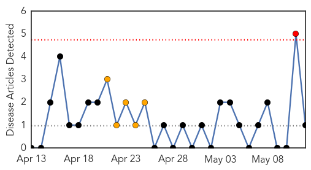
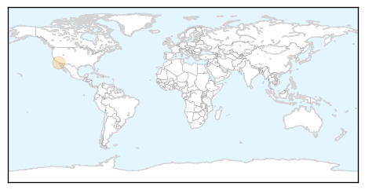
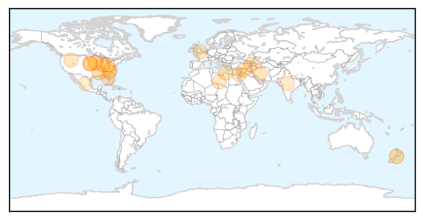

West Nile Virus
30-Day Web Trend
1 alerts, 5 warnings

30-Day Twitter Trend
0 alerts, 0 warnings

Article Locations
Article Confidences

Top Articles:
Top Tweets:
-
No tweets found for May 12, 2015
Influenza
30-Day Web Trend
2 alerts, 0 warnings

30-Day Twitter Trend
1 alerts, 0 warnings

Article Locations
Article Confidences

Top Articles:
- 0.980
- Flu vaccines top one million doses
- 0.940
- Bird flu outbreak hits Nebraska poultry farm -USDA
- 0.939
- Iowa Farm To Kill 5 Million Chickens In Effort To Contain Avian Flu : The Two-Way : NPR
- 0.893
- Bird flu worries: Specialist says there is always a risk of bird flu outbreak
- 0.875
- Dog Flu Being Tested For In Detroit Lakes
- 0.751
- May 12, 2015 Archives
- 0.751
- May 12, 2015 Archives
- 0.751
- May 12, 2015 Archives
- 0.751
- May 11, 2015 Archives
- 0.751
- May 11, 2015 Archives
- 0.751
- May 11, 2015 Archives
- 0.751
- May 11, 2015 Archives
- 0.751
- May 11, 2015 Archives
- 0.751
- May 11, 2015 Archives
- 0.690
- New test could identify resistant tuberculosis faster in London
- 0.644
- First Nebraska cases of bird flu confirmed in flock of 1.7M
- 0.636
- Bird flu virus tests negative
- 0.589
- Northeast Nebraska landfill ruled out for infected poultry
- 0.589
- Untitled Article
- 0.574
- Grassley, Ernst Urge USDA to Properly Deploy Resources to Fight Avian Flu
- 0.568
- TIMELINE-Tracing the bird flu outbreak in N. American poultry flocks
- 0.525
- Bird flu to cause Dixon County flock to be killed
Top Tweets:
-
No tweets found for May 12, 2015